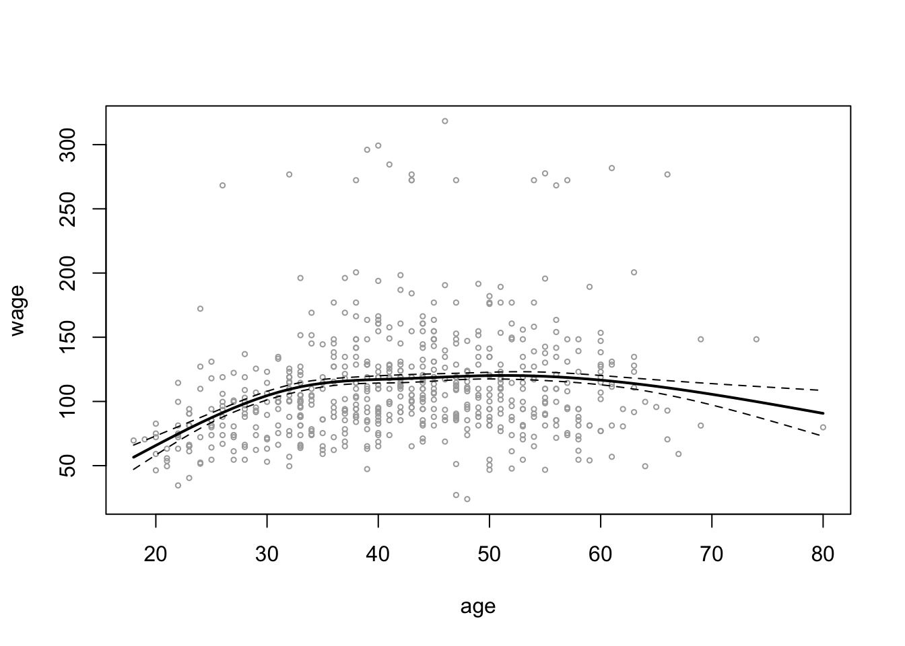
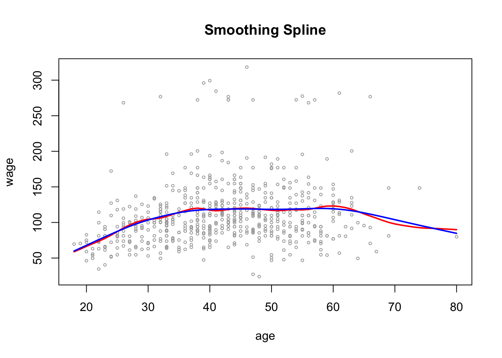
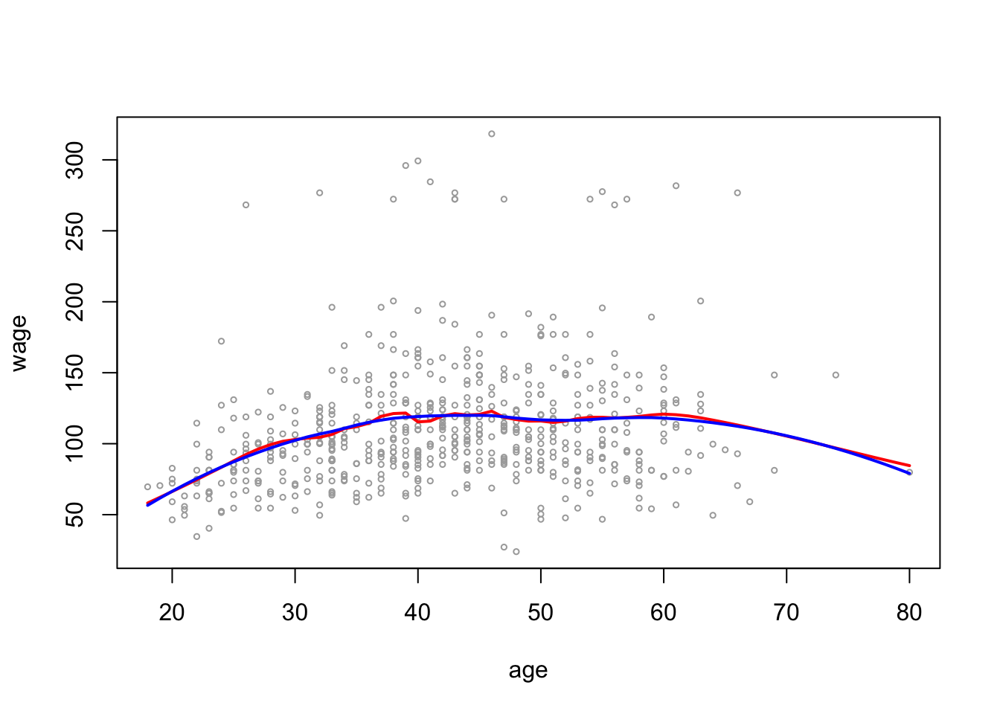
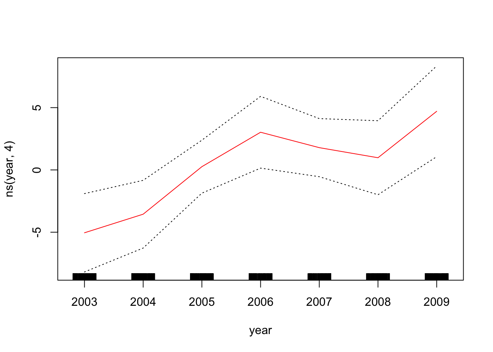
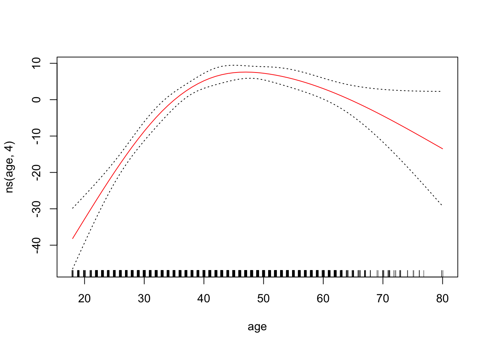
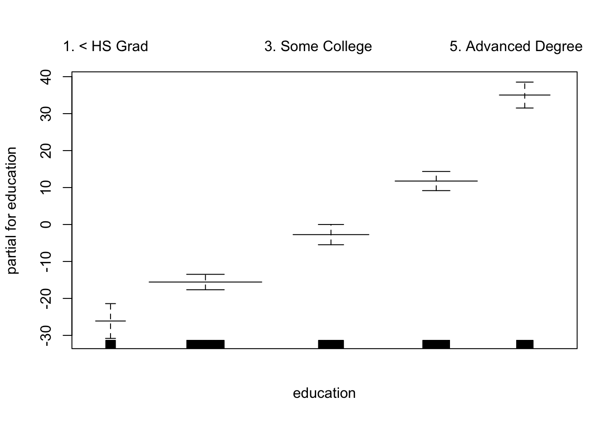
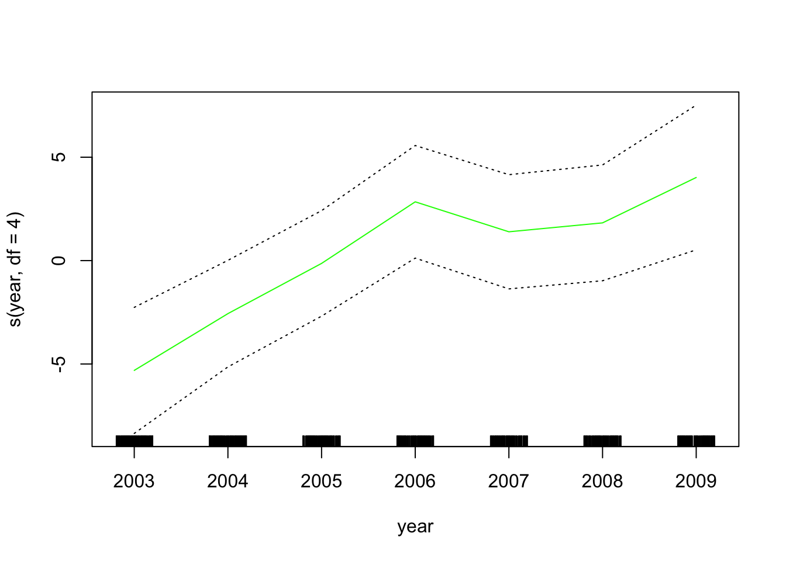
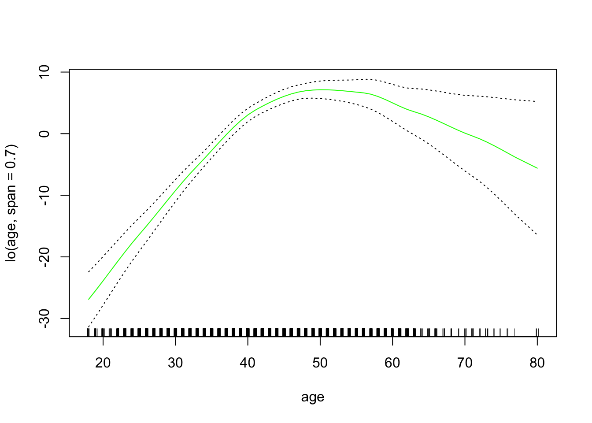

library(ISLR)Section 7.2 - Non-linear models
Note: this section has several different types of models. We cannot cover all of them in 1.25 hours. We will go over a few examples but once you understand how the examples, you should be able to apply the logic to other types models.
This week, we will use the Wage data that is part of the ISLR package
Load the Wage data and drop the “Wage” columns, as we did in Section 6
wage_data <- Wage
wage_data <- wage_data[, -10]To make life easier for later analyses, I will start by sorting the data on age. To do this, I will use a package called dplyr, which has a lot of great tools for data manipulation.
library(dplyr)The first two functions we will use are: - %>% which means “and then do” - arrange() which sorts the data on the column inside the parentheses
wage_data <- wage_data %>% arrange(age)We will start by splitting the data into training and test sets
set.seed(222)
train <- sample(1:nrow(wage_data), round(nrow(wage_data) * 0.8))
train <- sort(train)
test <- which(!(seq(nrow(wage_data)) %in% train))To quickly and easily measure MSEP, write our own function
msep_func <- function(predictions, true_vals) {
MSEP <- mean((predictions - true_vals)^2)
return(MSEP)
}Polynomial Regression
We can start by fitting a polynomial regression using only age
age_poly <- lm(wage ~ poly(age, 4), data = wage_data[train,])Extract the coefficients from the model
coef(summary(age_poly)) Estimate Std. Error t value Pr(>|t|)
(Intercept) 111.88351 0.8086511 138.358203 0.000000e+00
poly(age, 4)1 394.18926 39.6156514 9.950342 6.942194e-23
poly(age, 4)2 -434.00566 39.6156514 -10.955409 2.748637e-27
poly(age, 4)3 105.56550 39.6156514 2.664742 7.756432e-03
poly(age, 4)4 -90.09776 39.6156514 -2.274297 2.303622e-02When you use poly(), it returns a matrix of “orthogonal polynomials” so the columns of the matrix are linear combinations of age, age\(^2\), age\(^3\), age\(^4\). Let’s take a look!
head(poly(wage_data$age, 4)) 1 2 3 4
[1,] -0.0386248 0.05590873 -0.07174058 0.08672985
[2,] -0.0386248 0.05590873 -0.07174058 0.08672985
[3,] -0.0386248 0.05590873 -0.07174058 0.08672985
[4,] -0.0386248 0.05590873 -0.07174058 0.08672985
[5,] -0.0386248 0.05590873 -0.07174058 0.08672985
[6,] -0.0386248 0.05590873 -0.07174058 0.08672985head(wage_data$age)[1] 18 18 18 18 18 18If you want it to return the raw powers of age, you can add an argument to the function poly()
head(poly(wage_data$age, 4, raw = TRUE)) 1 2 3 4
[1,] 18 324 5832 104976
[2,] 18 324 5832 104976
[3,] 18 324 5832 104976
[4,] 18 324 5832 104976
[5,] 18 324 5832 104976
[6,] 18 324 5832 104976Although the two forms give you different numbers, they result in the same predictions, because your model is still a linear combination of the original powers
age_poly_TRUE <- lm(wage ~ poly(age, 4, raw = TRUE),
data = wage_data[train,])Extract the coefficients from the model
coef(summary(age_poly_TRUE)) Estimate Std. Error t value Pr(>|t|)
(Intercept) -2.085312e+02 6.559430e+01 -3.179106 0.0014961570
poly(age, 4, raw = TRUE)1 2.391179e+01 6.439356e+00 3.713383 0.0002091772
poly(age, 4, raw = TRUE)2 -6.646745e-01 2.257678e-01 -2.944063 0.0032705193
poly(age, 4, raw = TRUE)3 8.403840e-03 3.362741e-03 2.499105 0.0125172334
poly(age, 4, raw = TRUE)4 -4.098605e-05 1.802141e-05 -2.274297 0.0230362203We can see from the coefficient outputs of the two models that they have different coefficients. We will now check that they make the same predictions.
age_poly_pred <- predict(age_poly, newdata = wage_data[test,])
age_poly_TRUE_pred <- predict(age_poly_TRUE, newdata = wage_data[test,])Explore the predictions
head(age_poly_pred) 5 19 26 32 37 41
51.23518 58.14597 64.50781 64.50781 64.50781 64.50781 head(age_poly_TRUE_pred) 5 19 26 32 37 41
51.23518 58.14597 64.50781 64.50781 64.50781 64.50781 Calculate and print the MSEP
print(msep_func(age_poly_pred, wage_data[test, "wage"]))[1] 1689.522cbind() is a function that joins columns together by binding them next to each other. There is also a function rbind() that joins by binding new rows to the bottom of old ones. Let’s try using cbind() to look at both sets of predictions at the same time:
pred_comparison <- cbind(age_poly_pred, age_poly_TRUE_pred)The column names default to the variable names, but ifwe want to change them, we can use the colnames() function
colnames(pred_comparison) <- c("pred1", "pred2")We can then generate a variable that flags any instances where the predictions do not line up. To do this, I will introduce you another function in dplyr: mutate() which means create a new variable
pred_comparison <- pred_comparison %>%
mutate(check_same = as.numeric(pred1 == pred2))Error in UseMethod("mutate") : no applicable method for 'mutate' applied to an object of class "c('matrix', 'array', 'double', 'numeric')"
The previous line errored because pred_comparison is a matrix and dplyr was designed to work on data frames.
Make pred_comparison a data frame
pred_comparison <- data.frame(pred_comparison)Now try running the code:
pred_comparison <- pred_comparison %>%
mutate(check_same = as.numeric(pred1 == pred2))View the results
View(pred_comparison)Regression Splines
Splines
We’re going to start by making an age grid, so that we test our predictions on a grid of evenly spaced ages so that you capture the functional form well.
A quick aside, na.rm = TRUE means exlucde missing observations. Then we are going to run a spline with knots at ages 25, 40, and 60.
library(splines)Create the age grids
age_grid <- seq(from = min(wage_data$age, na.rm = TRUE),
to = max(wage_data$age, na.rm = TRUE))Now we use a basis function
spline_age <- lm(wage ~ bs(age, knots = c(25, 40, 60)),
data = wage_data[train,])
?bs # to check what the basis function doesGet the predictions at the grid points we defined earlier
spline_age_grid_pred <- predict(spline_age,
newdata = list(age = age_grid),
se = TRUE)Plot age on the x-axis and wage on the y-axis for the test data. Then add the predictions and the confidence intervals
plot(wage_data[test, "age"], wage_data[test, "wage"],
cex = 0.5, col = "darkgrey",
xlab = "age", ylab = "wage")
lines(age_grid, spline_age_grid_pred$fit, lwd = 2)
lines(age_grid, spline_age_grid_pred$fit +
2 * spline_age_grid_pred$se, lty ="dashed")
lines(age_grid, spline_age_grid_pred$fit -
2 * spline_age_grid_pred$se, lty ="dashed")Natural Splines
If we instead wanted to fit a natural spline, we use ns() instead of knots, we can specify degrees of freedom. In this case we are going to use 4 degrees of freedom.
ns_age_poly <- lm(wage ~ ns(age, df = 4), data = wage_data[train,])
ns_age_grid_poly_pred <- predict(ns_age_poly,
newdata = list(age = age_grid),
se = TRUE)
plot(wage_data[test, "age"], wage_data[test, "wage"],
cex = 0.5, col = "darkgrey",
xlab = "age", ylab = "wage")
lines(age_grid, ns_age_grid_poly_pred$fit, lwd = 2)
lines(age_grid, ns_age_grid_poly_pred$fit +
2 * ns_age_grid_poly_pred$se, lty = "dashed")
lines(age_grid, ns_age_grid_poly_pred$fit -
2 * ns_age_grid_poly_pred$se, lty = "dashed")
Smoothing Splines
To fit a smoothing spline, we use smooth.spline(). We can specify our own df
smooth_age <- smooth.spline(wage_data[train,"age"],
wage_data[train, "wage"],
df = 16)Or we can use cross Validation to get optimal df and penalty
smoothCV_age <- smooth.spline(wage_data[train, "age"],
wage_data[train, "wage"],
cv = TRUE) # specify we want to use CV
smoothCV_age$df[1] 6.786486Plot the results as before
plot(wage_data[test, "age"], wage_data[test, "wage"],
cex =.5, col = "darkgrey",
xlab = "age", ylab = "wage")
title(" Smoothing Spline ")
lines(smooth_age, col ="red", lwd = 2)
lines(smoothCV_age, col ="blue", lwd =2)
Local Regression
Local Regression use loess()
Note: span = 0.2 makes neighborhoods with 20% of observations. Span = 0.5 creates neighborhoods with 50% of observations. So the larger the span, the smoother the fit
local2_age <- loess(wage ~ age, span = 0.2, data = wage_data)
local5_age <- loess(wage ~ age, span = 0.5, data = wage_data)Get the predictions
pred_local2_age <- predict(local2_age, newdata = data.frame(age = age_grid))
pred_local5_age <- predict(local5_age, newdata = data.frame(age = age_grid))Plot the results
plot(wage_data[test, "age"], wage_data[test, "wage"],
cex =.5, col = "darkgrey",
xlab = "age", ylab = "wage")
lines(age_grid, pred_local2_age, col = "red", lwd = 2)
lines(age_grid, pred_local5_age, col = "blue", lwd = 2)
GAMs
Generalized Additive Models (GAMs)
Start with using natural spline functions of year and age and treating education as a qualitative variable does not require any special packages
- Example 1: GAMs with splines
gam_yae <- lm(wage ~ ns(year, 4) + ns(age, 4) + education,
data = wage_data[train,])- Example 2: GAMs with smoothing splines
library(gam)In the gam library s() indicates that we want to use a smoothing spline
gam_smooth <- gam(wage ~ s(year, 4) + s(age, 5) + education,
data = wage_data[train,])Plot the model results
par(mfrow = c(1, 3))
plot(gam_smooth, se = TRUE, col ="blue ")
To plot the GAM we created just using lm(), we can use plot.Gam()
plot.Gam(gam_yae, se = TRUE, col = "red") # Note the capitalization


Make predictions
gam_yae_pred <- predict(gam_yae, newdata = wage_data[test,])
gam_smooth_pred <- predict(gam_smooth, newdata = wage_data[test,])Print out the MSEP for these two GAMs using the function we created at the start of class
print(msep_func(gam_yae_pred, wage_data[test, "wage"]))[1] 1304.807print(msep_func(gam_smooth_pred, wage_data[test, "wage"]))[1] 1300.582- Example 3: GAMs with local regression
To use local regression in GAMs, use lo()
gam_lo <- gam(wage ~ s(year, df = 4) + lo(age, span = 0.7) + education,
data = wage_data[train,])Plot the results
plot.Gam(gam_lo, se = TRUE, col = "green")

If you want to do a local regression in two variables:
gam_2lo <- gam(wage ~ lo(year, age, span =0.5) + education,
data = wage_data[train,])Warning in lo.wam(x, z, wz, fit$smooth, which, fit$smooth.frame, bf.maxit, :
liv too small. (Discovered by lowesd)Warning in lo.wam(x, z, wz, fit$smooth, which, fit$smooth.frame, bf.maxit, : lv
too small. (Discovered by lowesd)Warning in lo.wam(x, z, wz, fit$smooth, which, fit$smooth.frame, bf.maxit, :
liv too small. (Discovered by lowesd)Warning in lo.wam(x, z, wz, fit$smooth, which, fit$smooth.frame, bf.maxit, : lv
too small. (Discovered by lowesd)